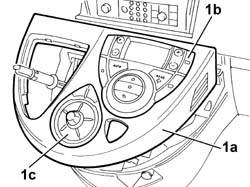
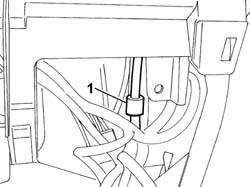
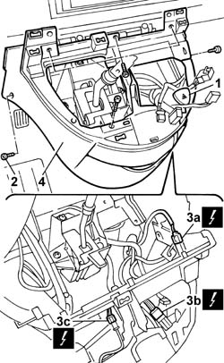

7040A66 CENTRE CONSOLE UNDER DASHBOARD - R.R.
- Path
- Procedures > 70 FITTINGS > 7040 BODY INTERIOR FITTINGS AND TRIM > 7040A PASSENGER COMPARTMENT TRIMS > 7040A66 CENTRE CONSOLE UNDER DASHBOARD - R.R.
- Kind
- repair procedure (removal / refitting; the operation number is the code)
- Applies to
- all engines; all production periods
- Interactive page
- https://sloeber94.github.io/elrnDB-fUlss/en/#/179007796
Applies to: all engines; all production periods
 Removing
Removing
 Refitting
RefittingSee
Op. 5530B56 BATTERY DRIP TRAY COVER - R.R.
Disconnect the negative battery terminal.
See
Op. 7040H29 FRONT PILLAR LOWER COVER (ONE), LEFT OR RIGHT - R.R.
Both
See
Op. 7040A68 GRILLE FOR CENTRE DASHBOARD SPEAKER - R.R.
All
See
Op. 7040A45 RIGHT DASHBOARD SIDE TRIM - R.R.
See
Op. 7040G22 FACIA COMPARTMENT LIGHT SWITCH/BULB HOLDER - R+R
See
Op. 7040A31 DASHBOARD COMPARTMENT ASSEMBLY - R.R.
See
Op. 7040A44 LEFT DASHBOARD SIDE TRIM - R.R.
See
Op. 7040A47 ODDMENTS POCKET UNDER DASHBOARD - R.R.
See
Op. 7040A60 UNDERDASHBOARD TRIM - R.R.
See
Op. 7040A65 CONSOLE SIDE CLOSING (ONE) - R.R.
Both
See
Op. 2125C24 GEAR LEVER KNOB - R + R
Using a suitable tool, release the connect and climate control system control unit holder surround.
Disconnect the electrical connections.
1. Remove the surround (1a) complete with climate control system control unit (1b) and connect functions control unit (1c).

Applies to: all engines; all production periods
1. Disconnect the cooling hose.

Applies to: all engines; all production periods
Extract the hazard warning lights switch.
Disconnect the electrical connection.
1. Remove the hazard warning lights switch.
2. Undo the retaining bolts.
Partly extract the centre console.
3. Disconnect the electrical connections (3a), (3b) and (3c).
4. Remove the console.
Remove the passenger compartment temperature sensor
Valid for versions from 10/05
- Remove the diagnostic connector.

Applies to: all engines; all production periods
Refitting
RemovingValid for versions from 10/05
- Position the diagnostic connector.
Applies to all versions
Position the passenger compartment temperature sensor
Connect the electrical connections.
Place the centre console in position and tighten the fixing bolts.
Connect the electrical connection.
Place the hazard warning lights switch in position.
Connect the electrical connections.
Connect the console cooling hose.
Position the surround complete with climate control system control unit and connect functions control unit.
See
Op. 2125C24 GEAR LEVER KNOB - R + R
See
Op. 7040A65 CONSOLE SIDE CLOSING (ONE) - R.R.
Both
See
Op. 7040A60 UNDERDASHBOARD TRIM - R.R.
See
Op. 7040A47 ODDMENTS POCKET UNDER DASHBOARD - R.R.
See
Op. 7040A44 LEFT DASHBOARD SIDE TRIM - R.R.
See
Op. 7040A31 DASHBOARD COMPARTMENT ASSEMBLY - R.R.
See
Op. 7040G22 FACIA COMPARTMENT LIGHT SWITCH/BULB HOLDER - R+R
See
Op. 7040A45 RIGHT DASHBOARD SIDE TRIM - R.R.
See
Op. 7040A68 GRILLE FOR CENTRE DASHBOARD SPEAKER - R.R.
All
See
Op. 7040H29 FRONT PILLAR LOWER COVER (ONE), LEFT OR RIGHT - R.R.
Both
Connect the negative battery terminal.
See
Topics linked from this page (11)
- 2125C24 GEAR LEVER KNOB - R + R
- 5530B56 BATTERY DRIP TRAY COVER - R.R.
- 7040A31 FLAP ASSEMBLY - R R
- 7040A44 SEAT INTERIOR GUARD - R R
- 7040A45 FACIA RH SIDE COVER - R R
- 7040A47 ODDMENTS POCKET UNDER DASHBOARD - R.R.
- 7040A60 UNDER FACIA TRIM - R+R
- 7040A65 PASSENGER COMPARTMENT BOX LOCK , ONE , R R
- 7040A68 GRILLE FOR CENTRE DASHBOARD SPEAKER - R.R.
- 7040G22 FACIA COMPARTMENT LIGHT SWITCH/BULB HOLDER - R+R
- 7040H29 FRONT PILLAR LOWER COVER (ONE), LEFT OR RIGHT - R.R.